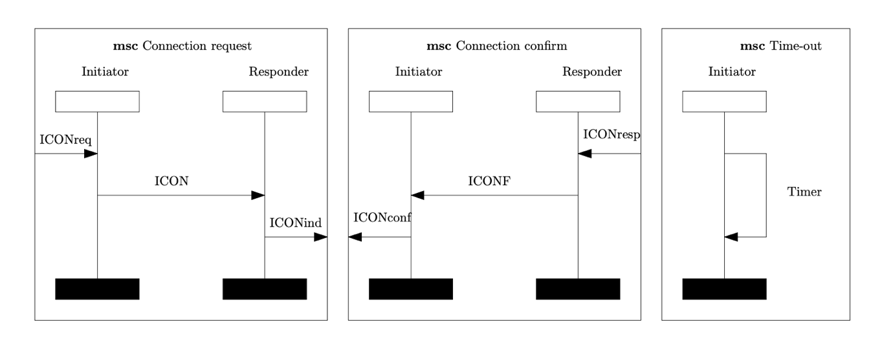
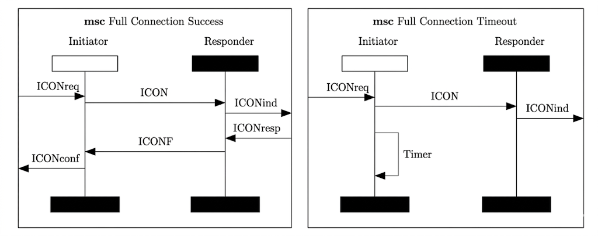

Annotations / Gemini 3 - Thinking / Example 7.docx
Question: Consider the following High-Level Message Sequence Chart and
its components represented in the attached two files. Generate two MSCs
included in the semantics of the High-Level Message Sequence Chart.


Answer:
Analyzing the Source Material
I'm now diving into the core of the challenge, breaking down the High-Level MSC. I'm focusing on identifying the starting state and the logical sequence of events. I'm aiming to pinpoint the key interactions and states to accurately represent in the new MSCs.
Deconstructing the Sequence
I've carefully examined the High-Level MSC and its components. I understand the starting state, the connection request, and the branching choice between connection confirmation and time-out. I've also analyzed the individual MSCs: connection request, connection confirm, and time-out, understanding their respective message flows. I now have a solid grasp on how the information should be visually rendered.
Formulating the MSCs
I've constructed a plan for generating two new Message Sequence Charts (MSCs) based on the semantics of the source material. I've considered the high-level chart and its branching choices, and I've analyzed the individual component MSCs to ensure accurate representation of connection success and failure scenarios. I am now working on Path 1, the connection success case.
Mapping the Execution Paths
I'm now formulating the complete MSCs for connection success and failure. Path 1, the success case, will integrate "Connection request" and "Connection confirm" sequentially. Path 2, the timeout case, will follow "Connection request" with the "Time-out" logic. I'm focusing on preserving the original message flows and lifelines within the combined charts.
Combining the Sequences
I'm now building the final MSCs. Path 1, the success case, integrates the "Connection request" and "Connection confirm" sequences into a single chart. Path 2, representing the timeout, combines "Connection request" with the timer-based "Time-out" logic. I'm focusing on ensuring the message flow and lifelines are accurately depicted.
Generating the Diagrams
I've completed the conceptual design of both MSCs, including "Full Connection Success" and "Full Connection Timeout". I've finalized the message sequences, lifelines, and the timer's integration within the timeout scenario. I'm now synthesizing these charts into a single panel.
Refining the Visualization
I've finalized the structure of both the "Full Connection Success" and "Full Connection Timeout" MSCs, incorporating all message flows and lifelines. The success scenario is linear, depicting request and confirm. The timeout scenario has the time-out logic integrated on the initiator's lifeline following the connection request. I am now working on the spatial arrangement of the diagrams.
Refining the Path Decisions
I've finalized the structure of the two MSCs based on a more recent review. I've now clarified the sequential nature of the component parts and revised the sequencing of the messages and timers. I am now working on ensuring that I clearly label both charts.
\n\n I'm now completing the layout and content for the two MSC diagrams, focusing on the refined paths. I've implemented a clearer delineation of message sequences and the timer integration in the timeout scenario. I am checking the final ordering.
Integrating the Timeout Sequence
I'm now integrating the timeout logic. I've placed the timer sequence on the Initiator lifeline after the "Connection request" is complete, aligning with the High-Level MSC's semantics. I'm focusing on creating two self-contained charts with sequential message flows.
Finalizing the MSC Design
I've completed the detailed construction plans for both the "Full Connection Success" and "Full Connection Timeout" MSCs, refining the structure and message sequences. The success chart depicts the sequential flow of request and confirm messages, while the timeout scenario accurately integrates the timer-based logic after the connection request. I am confirming all messages are correctly represented.
Refining the Diagrams
I'm now implementing the refined structures for both MSCs, "Full Connection Success" and "Full Connection Timeout." I'm ensuring message sequences accurately reflect the high-level chart's semantics. The success case's linear flow and the timeout scenario's timer integration are the current focus. I'm double-checking all the details.
Refining the Diagrams
I'm now generating the final image, integrating both the "Full Connection Success" and "Full Connection Timeout" MSCs into a single visual panel. I'm focusing on the clear and unambiguous representation of message sequences and the logical integration of the timeout mechanism into Path 2.
Generating the Sequence Diagrams
I'm now implementing the final prompt to generate a new image containing the two MSCs. I'm focusing on the sequential structure. I'm ensuring both charts reflect the success and timeout cases accurately. I've re-examined the prompt to verify all the details.
Refining the Image Generation
I'm now generating the prompt for the final image. I've broken down the steps and logic into a clear sequence. I'm focusing on ensuring accurate representation of the two MSCs. I'm double-checking the labels.
Synthesizing the Sequence
I'm now generating the prompt to create a single image containing two MSC diagrams. I've ensured that both the connection success and timeout scenarios are clearly depicted, utilizing the specified message sequences and lifelines. The layout is designed to be easily readable, with distinct panels for each sequence, labeled and structured appropriately.
Assessing Diagrammatic Accuracy
I'm verifying the image's fidelity to the initial chart. The depiction of subprocesses has been consolidated into distinct traces. I've noted that the first trace accurately captures the sequence 'Connection request' followed by 'Connection confirm'. Furthermore, the second trace has accurately represented the sequence 'Connection request' followed by 'Time-out'.
Evaluating Trace Fidelity
I've confirmed that the image maintains the relationships outlined in the provided charts, with distinct traces now representing subprocesses. I am ensuring the generated representation of "Connection request" and "Connection confirm," and "Connection request" and "Time-out" are in correct sequence. The visual coherence with the input data is being evaluated.
I have generated the two full Message Sequence Charts that represent the possible execution paths defined by your High-Level MSC:
msc Full Connection Success: Shows a successful request followed by a confirmation.
msc Full Connection Timeout: Shows the connection request being followed by a system time-out.

Task type: Composition
Judgment: Correct